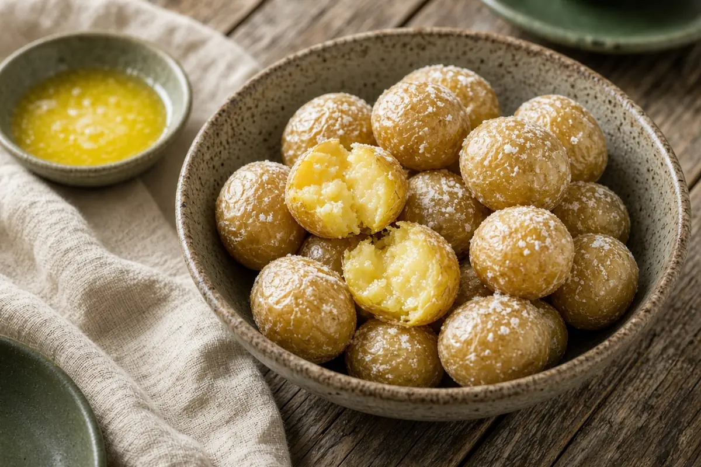

Syracuse Salt Potatoes
Upstate New York's cookout classic: small new potatoes boiled in heavily salted water until creamy inside with a salty crust, drowned in melted butter.

Adapted from Allrecipes
8 servings
By
Yield: 8 servings
Prep:
Cook:
Total:
Difficulty: Easy
Ingredients
- 4 lb new potatoes
- 1 1/2 cups fine salt
- 8 Tbsp butter, melted
Instructions
- Wash the potatoes. Fill a large pot with water and stir in the fine salt until no more will dissolve and some settles on the bottom.
- Add the potatoes, bring to a boil, then lower to a simmer and cook 15 minutes, until tender but still firm. Drain and cover to keep hot.
- Melt the butter in a small pan or the microwave and pour it over the hot potatoes to serve.
Notes: As the potatoes dry, a thin white salt crust forms; that's the point. They pair well with the low-country boil and grilled meats.